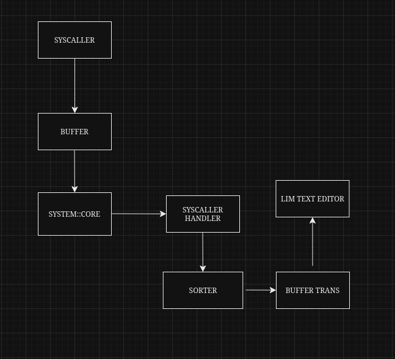
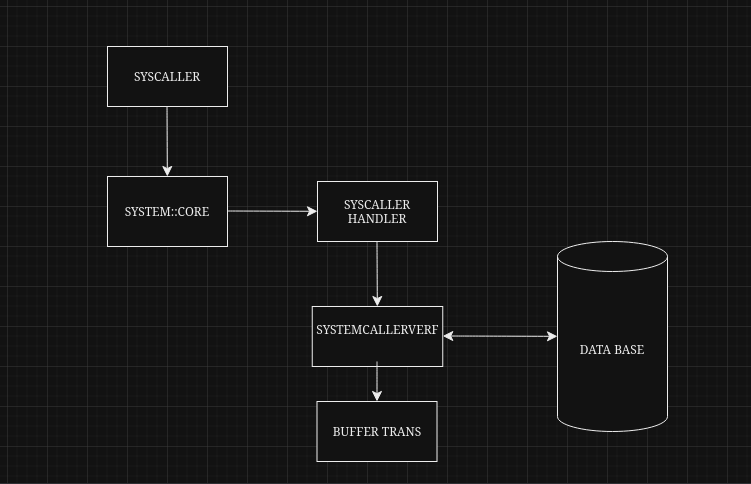
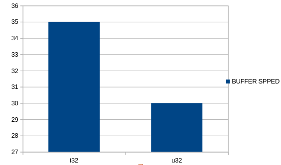
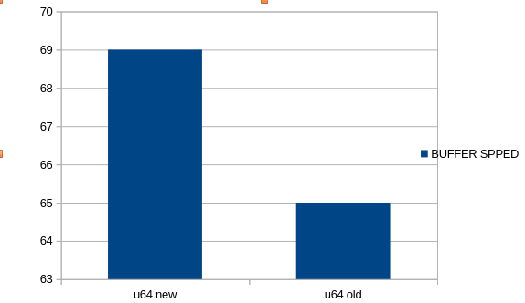

Likes: 1
Subject
This week subject (16.09.2024-22.09.2024) is how i made lim working perfectly and about the minkernel 0.0.3
Making lim finally work
So directly, i found out that the problem was in syscalls and Buffercaller
Explanation is that the system caller was very poor made like to call the kernel to get input from keyboard (or any driver) you needed firstly to make a Buffer supporter then use the syscaller (that could to not give you all the things you need) to try to receiv input but even then you will need to make an input Buffer so if in your code you need input you had to type about 20-50 lines of code
Because lim needs input for shortcuts this was a very painful proccess
Now with the new syscaller it works like this
Ironic is that this solved the Buffer problem
So yeah the problem was only from syscaller that was made very very poor
Minkernel 0.0.3
This is the most important version for me because this is what the FIRST MINKERNEL VERSION SHOULD HAVE LOOKED LIKE so yeah fuck it
The first and the most important thing that i changed is the syscaller that now is working properly and you can finally make system calls much easier than before
The way it works is that when you make a system call you make a buffer that has the information of what you need then systemcallerverf (function) verifies in a "data base" and archive them in a new buffer then it just give to your program the things you need
The next things that i update is the allocator that now has his own directory with a little calculator before allocation and it can do the calculation while the program starts
allocator is now much better so you will see some new apps and tools for lexOS because now the allocator works better and in the next segment we will se the support update
The support for apps and interface now is getting bigger
the support in minkernel is an essential part in minkernel for apps so now we have a fact about minkernel:
All the apps, tools and code that runs on minkernel (like the interface or the lim text editor) work on the third layer of minkernel named support, here apps get their permition run ONLY until it's stopped (to work on background it need to work with management section in minkernel), if you make an app you don't need to do anything only if you want it to run in background
the support really needs to be perfect to support any code, some codes can have some problems so please test the code before you post it
Now some performance testing with the updated i32 and u64
First we will have i32 vs u32
First lets set up the measure of the chart
the numbers indicate the Bytes transfer speed
The i32 had the max point at 35B but that doesn't mean that is consistent, at the lowest it got at 32 witch still easily beats u32
Even if u32 is more slower it is more consistent the slowest it got was 29 at that was at start
i normaly is more faster than u but just because it isnt consistent and the upper you get with numbers the more big the gap is
like i64 tehnically can go up to 71Bytes witch is faster than 68 from u64 but the gap goes to 67 at this is not only at start
Plus u can be made faster than i if it is optimized correctly
Next lets see the update for u64
Little story before we begin the first chart that i made from this update said that u64 goes only to 68 but after i recompile the kernel it got to 69
As we see u64 now perform better than the last generation
The u64 new perform better because some function now support better u64 and the base definition of u64 is now upgraded
The new editing option will appear next week, and the config explanation :)
Contact
For anything else i wait you in matrix/element in my server https://matrix.to/#/#lexos:matrix.org wait you there to have some tips for c go or rust for lowlevel or apps.I will even join sometimes in a voice group to chat and program in a team :)
0
0
0
0